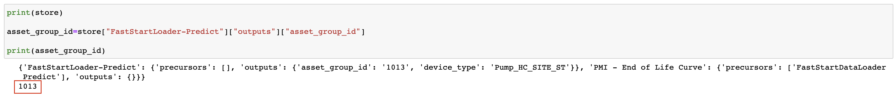
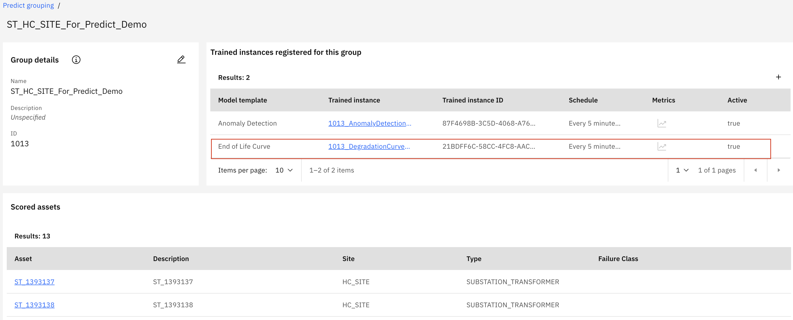
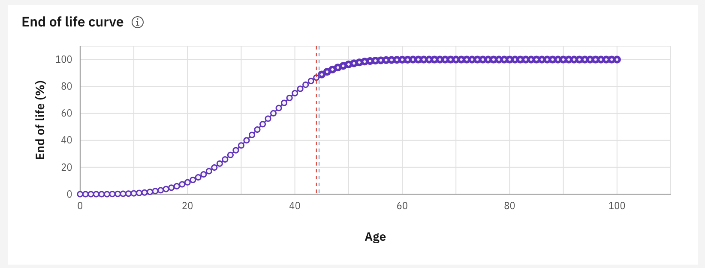

Create End of Life Curve
Maximo Predict comes with notebook templates to assist in streamlining data uploads to Maximo. This notebook will create the End of Life Curve using provided csv files.
These instructions use the notebook named 4_PMI - End of Life Curve HPU.ipynb file with the Substation Transformer for Health and Predict for Utilities Demo Assets. Note that this uses simulated Pump Data for the sensor readings.
In this exercise you will use Watson Studio and Health and Predict - Utilities to:
- Upload the and Run the End of Life Curve Notebook using a template to Train and Display an End of Life Curve
- Confirm the Data Has been uploaded for your assets
Note
You must complete the previous exercise for Setup Watson Studio before you start this exercise.
Pre-requisites
- Review Predict documentation for the list of available models.
- Ensure your MAS Predict environment is running and you have access. Try your server URL that might look something like: https://main.predict.ivt11rel87.ivt.suite.myhost.com/ibm/pmi/service/rest/system/info
- Ensure you have Access to Asset data files for the Health and Predict Utilities Demo Data
- Complete the Load Data into Manage lab for the Utilities data.
- Complete the Load Utilities Health Scores via Notebook lab
- Complete the Create Utilities Predict Group and Upload Sensor Data lab
- Have the following information from the previous lab:
Predict_Envs.JSONandFast_Execution.JSON
Note
It is best to perform this lab in your own Watson Studio Project created using Setup Watson Studio instructions. If you are using a shared project, ensure you append each file uploaded with your initials and update the file paths in the notebooks to include that change.
Upload and Start the End of Life Curve Notebook
-
Upload or open the End of Life Curve template notebook to your Project. Use the steps from the previous exercise Add Notebook From File to a Watson Studio Project If you are using a shared project, rename the notebook template by prepending your initials to the template. If this is done, ensure any paths or file names within the notebook are updated as well. If you already have uploaded the notebook, open it with Watson Studio. Select the
4_PMI - End of Life Curve HPUnotebook template. -
Open the notebook. Click on the
pencilicon next to your notebook. -
If the notebook fails to start, restart it. Click on the
iicon ,Environmenttab,Running statusdrop down select box and chooseRestart

Run the Notebook
Install the Maximo Predict SDK
-
Read the introduction to the End of Life Curve Notebook.
-
Run the first cell to define the requirements and some environment variables to run this notebook. This cell also checks that the precursor notebook has been run.
-
Run the next cell to set the
asset_group_idfrom the stored asset group id in the JSON file produced from the Fast Start Data Loader notebook. Ensure the printed asset group ID matches your asset group.

-
Run the next cell to define the API keys used to call Maximo Predict from the
Predict_Envs.JSONfile -
Skip the next cell. It should be commented out, but it would be used to define the API and Predict Environment variables manually if the
Predict_Envs.JSONfile was not available. -
Run the next cell to import the os, trim the provided base url to be used when downloading
pmliblater in the notebook and used to contact the environment via API. -
Run the following two cells to uninstall and reinstall the
pmliblibrary. This is done to ensure you have the correct version.
Set up the Model Training Pipeline, Train, Register and Enable the Model
-
Run the first cell define the model settings for the Pipeline.
-
Run the next cell to train the model. Some models take time to train.
-
Once that process is complete, register the model to your asset group by running the next cell
-
Finally, Run the next cell to enable it and determine how often it will be run in monitor. This is the last cell to be run in this notebook.
Confirm Model Registration
-
Navigate to Maximo Health and Predict for Utilities within your environment
-
Use the left-hand menu to go into
Predict Grouping
-
Select your asset group

-
Click into your asset group and ensure you have End of Life Curve listed under
Trained instances registered for this groupand select an asset to go to the Health Dashboard

- Scroll down and expand the
Predictsection to ensure the End of Life Curve is visible.

Note
Recall in the Create Utilities Predict Group and Upload Sensor Data lab only some assets have sensor data. If an asset does not have sensor data, it will not have Predict data
Congratulations you have created an End of Life Curve and associated it to your assets!